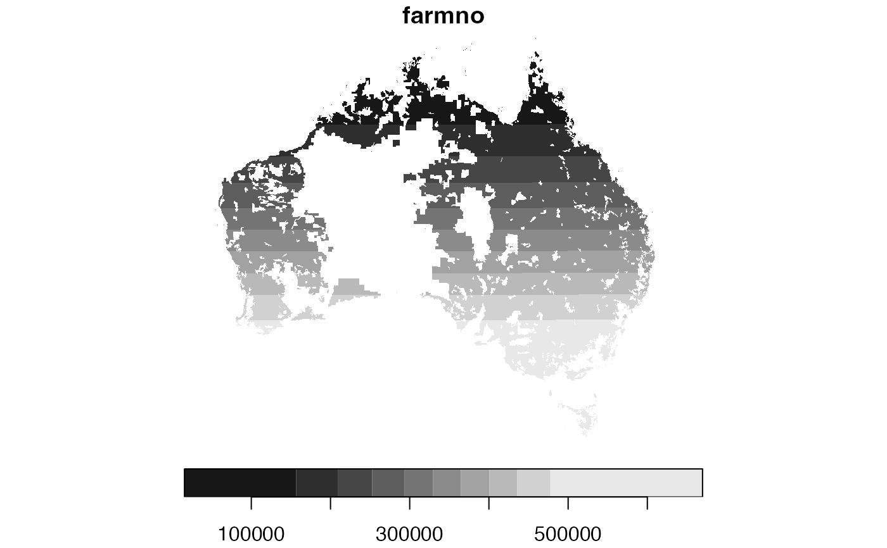

Read AGFD NCDF Files With stars
read_agfd_stars.RdRead Australian Gridded Farm Data, (AGFD) as a stars object.
Value
a list object of stars objects of the Australian Gridded
Farm Data with the file names as the list's objects' names
See also
Other AGFD:
get_aagis_regions(),
get_agfd(),
read_agfd_dt(),
read_agfd_terra(),
read_agfd_tidync()
Examples
agfd <- get_agfd(cache = TRUE) |>
read_agfd_stars()
#> Will return stars object with 612226 cells.
#> No projection information found in nc file.
#> Coordinate variable units found to be degrees,
#> assuming WGS84 Lat/Lon.
head(agfd)
#> $f2022.c1991.p2022.t2022.nc
#> stars object with 2 dimensions and 41 attributes
#> attribute(s):
#> Min. 1st Qu. Median
#> farmno 15612.0000000000000 233091.50000000000 329567.0000000000
#> R_total_hat_ha 2.9543958712458 7.88312157345 21.7520528788
#> C_total_hat_ha 1.3044401915604 4.34079101456 9.9449849120
#> FBP_fci_hat_ha -143.7597853014812 3.60529966721 11.5796640879
#> FBP_fbp_hat_ha -349.5216385432096 3.36599832904 11.5074294496
#> A_wheat_hat_ha 0.0000000000000 0.04062785581 0.1114289202
#> H_wheat_dot_hat 0.6671589612961 1.83826547861 2.3505240679
#> A_barley_hat_ha 0.0000000000000 0.00000000000 0.0502979662
#> H_barley_dot_hat 0.5572336912155 1.92234039307 2.3802781105
#> A_sorghum_hat_ha 0.0000000000000 0.00000000000 0.0000000000
#> H_sorghum_dot_hat 0.9769681096077 2.22761380672 2.9048669338
#> A_oilseeds_hat_ha 0.0000000000000 0.00000000000 0.0215871697
#> H_oilseeds_dot_hat 0.3659397065639 1.20948547125 1.5076171756
#> R_wheat_hat_ha 0.0000000000000 23.13629824432 87.5335248318
#> R_sorghum_hat_ha 0.0000000000000 0.03806441592 0.2084619233
#> R_oilseeds_hat_ha 0.0000000000000 0.00000000000 12.1375392585
#> R_barley_hat_ha 0.0000000000000 0.47031668260 22.4401937858
#> Q_wheat_hat_ha 0.0000000000000 0.05758050989 0.2201967052
#> Q_barley_hat_ha 0.0000000000000 0.00102276429 0.0638918793
#> Q_sorghum_hat_ha 0.0000000000000 0.00003785969 0.0004468617
#> Q_oilseeds_hat_ha 0.0000000000000 0.00000000000 0.0203873107
#> S_wheat_cl_hat_ha 0.0000000000000 0.01031101944 0.0278909501
#> S_sheep_cl_hat_ha 0.0000000000000 0.00005609974 0.0028205969
#> S_sheep_births_hat_ha 0.0000000000000 0.00012334981 0.0020117671
#> S_sheep_deaths_hat_ha 0.0000000000000 0.00002332359 0.0003575969
#> S_beef_cl_hat_ha 0.0000000000000 0.00896048037 0.0236599663
#> S_beef_births_hat_ha 0.0000000000000 0.00323979856 0.0080939879
#> S_beef_deaths_hat_ha 0.0000000000000 0.00036923631 0.0007186160
#> Q_beef_hat_ha 0.0000000000000 0.00286648312 0.0081841423
#> Q_sheep_hat_ha 0.0000000000000 0.00019370109 0.0018231394
#> Q_lamb_hat_ha 0.0000000000000 0.00000000000 0.0008916076
#> R_beef_hat_ha 0.0000000000000 4.61290247049 13.8434863062
#> R_sheep_hat_ha 0.0000000000000 0.02721338801 0.2784868603
#> R_lamb_hat_ha 0.0000000000000 0.00000000000 0.1557707627
#> C_fodder_hat_ha 0.0616502220534 0.23094416957 0.7464531700
#> C_fert_hat_ha 0.0002988031931 0.01411268853 0.0445971911
#> C_fuel_hat_ha 0.1217487221946 0.35020165163 0.6608348622
#> C_chem_hat_ha 0.0000753452407 0.00463487544 0.0150751740
#> A_total_cropped_ha 0.0000005837776 0.00005752171 0.0002051526
#> FBP_pfe_hat_ha -302.8584187665588 3.73113973447 12.0242242795
#> farmland_per_cell 61.7160453796387 1752.28564453125 2188.2673339844
#> Mean 3rd Qu. Max. NA's
#> farmno 324737.718761844 418508.500000000 669706.00000000 443899
#> R_total_hat_ha 169.513930077 174.855384270 2415.75560586 443899
#> C_total_hat_ha 93.221054190 95.722185748 1853.53852978 443899
#> FBP_fci_hat_ha 76.292875887 77.674850143 1186.58302320 443899
#> FBP_fbp_hat_ha 60.075093593 62.859611694 1240.60032184 443899
#> A_wheat_hat_ha 0.136568296 0.211284459 0.50477606 565224
#> H_wheat_dot_hat 2.435295676 2.940480590 5.18444681 573128
#> A_barley_hat_ha 0.060721311 0.090248279 0.28571361 565224
#> H_barley_dot_hat 2.439250929 2.888753653 5.65877056 578161
#> A_sorghum_hat_ha 0.010142199 0.000000000 0.23908503 596890
#> H_sorghum_dot_hat 3.095216308 3.954913616 6.13470650 610252
#> A_oilseeds_hat_ha 0.046612347 0.092157938 0.29662347 565224
#> H_oilseeds_dot_hat 1.529958548 1.875293106 2.87910819 588280
#> R_wheat_hat_ha 122.290375777 196.327717551 880.03330032 565224
#> R_sorghum_hat_ha 8.750469526 1.264414677 336.83771763 596890
#> R_oilseeds_hat_ha 46.895166831 82.439152814 571.11627416 565224
#> R_barley_hat_ha 43.597348749 63.968261113 338.41115943 565224
#> Q_wheat_hat_ha 0.314893004 0.503012295 2.05857023 565224
#> Q_barley_hat_ha 0.123423267 0.181440626 0.91948165 565224
#> Q_sorghum_hat_ha 0.031227226 0.002938208 1.33593894 596890
#> Q_oilseeds_hat_ha 0.071827077 0.124939172 0.78299719 565224
#> S_wheat_cl_hat_ha 0.041511333 0.061673641 0.42652055 565224
#> S_sheep_cl_hat_ha 0.191991818 0.092595521 5.64610291 443899
#> S_sheep_births_hat_ha 0.135750974 0.056677903 3.89230775 443899
#> S_sheep_deaths_hat_ha 0.010842414 0.006285653 0.34500750 443899
#> S_beef_cl_hat_ha 0.067664133 0.058537030 1.86055101 443899
#> S_beef_births_hat_ha 0.025940980 0.019292095 0.75514500 443899
#> S_beef_deaths_hat_ha 0.001528121 0.001652099 0.03855944 443899
#> Q_beef_hat_ha 0.024822756 0.017820155 0.71240070 443899
#> Q_sheep_hat_ha 0.081408057 0.035933701 2.04089372 443899
#> Q_lamb_hat_ha 0.090075369 0.029972110 3.20728252 443899
#> R_beef_hat_ha 52.994751059 33.450064031 1798.03296238 443899
#> R_sheep_hat_ha 14.338859978 6.031003699 394.72481948 443899
#> R_lamb_hat_ha 18.054548079 5.534245794 659.53248469 443899
#> C_fodder_hat_ha 4.646539745 3.760380320 202.65442866 443899
#> C_fert_hat_ha 16.153447367 9.852582377 398.84462259 443899
#> C_fuel_hat_ha 5.640216302 6.109007786 111.26049211 443899
#> C_chem_hat_ha 8.595720672 4.692214855 192.84255245 443899
#> A_total_cropped_ha 0.073045321 0.028742170 0.81671737 443899
#> FBP_pfe_hat_ha 66.515122449 70.680495326 1337.27614165 443899
#> farmland_per_cell 2060.586846805 2463.949951172 3024.08666992 443899
#> dimension(s):
#> from to refsys values x/y
#> lon 1 886 WGS 84 [886] 112,...,156.2 [x]
#> lat 1 691 WGS 84 [691] -44.5,...,-10 [y]
#>
#> $f2022.c1992.p2022.t2022.nc
#> stars object with 2 dimensions and 41 attributes
#> attribute(s):
#> Min. 1st Qu. Median
#> farmno 15612.0000000000000 233091.50000000000 329567.0000000000
#> R_total_hat_ha 2.5237437238640 7.77512117352 21.6666316672
#> C_total_hat_ha 1.3679004411570 4.45944460709 10.0800647579
#> FBP_fci_hat_ha -184.3381051125319 3.37877013091 11.8304171343
#> FBP_fbp_hat_ha -375.5537137318383 2.09898534146 9.6990783131
#> A_wheat_hat_ha 0.0000000000000 0.02313810818 0.1107586175
#> H_wheat_dot_hat 0.0686247795820 1.33084309101 2.0452303886
#> A_barley_hat_ha 0.0000000000000 0.00000000000 0.0523555148
#> H_barley_dot_hat 0.0000000000000 1.42698356509 2.1006045341
#> A_sorghum_hat_ha 0.0000000000000 0.00000000000 0.0000000000
#> H_sorghum_dot_hat 0.4240904152393 1.97182095051 2.7809778452
#> A_oilseeds_hat_ha 0.0000000000000 0.00000000000 0.0000000000
#> H_oilseeds_dot_hat 0.1348402798176 1.01430696249 1.5513120890
#> R_wheat_hat_ha 0.0000000000000 10.54588169199 76.1211661202
#> R_sorghum_hat_ha 0.0000000000000 0.03975718377 0.2402515190
#> R_oilseeds_hat_ha 0.0000000000000 0.00000000000 2.8811225009
#> R_barley_hat_ha 0.0000000000000 0.26204456659 18.2118943376
#> Q_wheat_hat_ha 0.0000000000000 0.02075855120 0.1700793410
#> Q_barley_hat_ha 0.0000000000000 0.00047473552 0.0456361529
#> Q_sorghum_hat_ha 0.0000000000000 0.00005359739 0.0005170856
#> Q_oilseeds_hat_ha 0.0000000000000 0.00000000000 0.0030030489
#> S_wheat_cl_hat_ha 0.0000000000000 0.00540895087 0.0206207116
#> S_sheep_cl_hat_ha 0.0000000000000 0.00005575515 0.0029091635
#> S_sheep_births_hat_ha 0.0000000000000 0.00012072544 0.0018045048
#> S_sheep_deaths_hat_ha 0.0000000000000 0.00002133720 0.0003415744
#> S_beef_cl_hat_ha 0.0000000000000 0.00919452684 0.0230217732
#> S_beef_births_hat_ha 0.0000000000000 0.00317246939 0.0079214993
#> S_beef_deaths_hat_ha 0.0000000000000 0.00038969573 0.0007166479
#> Q_beef_hat_ha 0.0000000000000 0.00270169877 0.0082341447
#> Q_sheep_hat_ha 0.0000000000000 0.00018863480 0.0016393834
#> Q_lamb_hat_ha 0.0000000000000 0.00000000000 0.0008385795
#> R_beef_hat_ha 0.0000000000000 4.27119069556 13.8556170109
#> R_sheep_hat_ha 0.0000000000000 0.02523730689 0.2319230450
#> R_lamb_hat_ha 0.0000000000000 0.00000000000 0.1421875430
#> C_fodder_hat_ha 0.0627963668795 0.26283804752 0.9299990550
#> C_fert_hat_ha 0.0002988031931 0.01375876739 0.0433359221
#> C_fuel_hat_ha 0.1274073046476 0.34549844297 0.6524994150
#> C_chem_hat_ha 0.0000750872643 0.00440344465 0.0148388207
#> A_total_cropped_ha 0.0000005837776 0.00005752171 0.0002051526
#> FBP_pfe_hat_ha -328.8904939551875 2.34470214427 10.3688363415
#> farmland_per_cell 61.7160453796387 1752.28564453125 2188.2673339844
#> Mean 3rd Qu. Max. NA's
#> farmno 324737.718761844 418508.500000000 669706.00000000 443899
#> R_total_hat_ha 164.665407564 148.477820089 2401.40501714 443899
#> C_total_hat_ha 92.314343740 92.074453820 1951.67120198 443899
#> FBP_fci_hat_ha 72.351063823 58.142296918 1141.06120894 443899
#> FBP_fbp_hat_ha 55.492464093 40.760296130 1131.49444504 443899
#> A_wheat_hat_ha 0.134320202 0.210459121 0.50713432 565224
#> H_wheat_dot_hat 2.170069397 2.894278526 5.37530041 576309
#> A_barley_hat_ha 0.062801477 0.095054032 0.30408436 565224
#> H_barley_dot_hat 2.096561473 2.746862531 6.07683563 578748
#> A_sorghum_hat_ha 0.015753275 0.000000000 0.25639790 596890
#> H_sorghum_dot_hat 2.912226369 3.720228672 6.75457048 609368
#> A_oilseeds_hat_ha 0.045007112 0.091766495 0.27655026 565224
#> H_oilseeds_dot_hat 1.503849848 1.981969416 3.03877401 589475
#> R_wheat_hat_ha 118.951636138 199.059210710 963.97172614 565224
#> R_sorghum_hat_ha 11.125225269 1.661280747 321.14475611 596890
#> R_oilseeds_hat_ha 44.962384899 79.876032812 561.22379003 565224
#> R_barley_hat_ha 45.030579996 64.642018748 365.27667518 565224
#> Q_wheat_hat_ha 0.278800887 0.470944541 2.25078959 565224
#> Q_barley_hat_ha 0.115001422 0.164102133 0.99278414 565224
#> Q_sorghum_hat_ha 0.040041624 0.004143535 1.26796708 596890
#> Q_oilseeds_hat_ha 0.069089134 0.122455286 0.76946655 565224
#> S_wheat_cl_hat_ha 0.035996590 0.050072212 0.39355465 565224
#> S_sheep_cl_hat_ha 0.188816993 0.085641345 5.37649034 443899
#> S_sheep_births_hat_ha 0.133563788 0.048299043 3.84064845 443899
#> S_sheep_deaths_hat_ha 0.011223830 0.007874720 0.34777707 443899
#> S_beef_cl_hat_ha 0.067510238 0.057118453 1.82892038 443899
#> S_beef_births_hat_ha 0.025411642 0.018623151 0.75108558 443899
#> S_beef_deaths_hat_ha 0.001620689 0.001859526 0.04168929 443899
#> Q_beef_hat_ha 0.024354745 0.018377606 0.72431377 443899
#> Q_sheep_hat_ha 0.082438933 0.036168318 1.95239195 443899
#> Q_lamb_hat_ha 0.089650536 0.026562565 3.32915452 443899
#> R_beef_hat_ha 50.405791451 33.995619450 1753.16362052 443899
#> R_sheep_hat_ha 14.176639807 5.519248233 349.92190010 443899
#> R_lamb_hat_ha 17.721636561 4.853875696 672.96738951 443899
#> C_fodder_hat_ha 5.393502615 4.939562654 219.67988077 443899
#> C_fert_hat_ha 15.379458185 6.971449144 395.18125617 443899
#> C_fuel_hat_ha 5.470182900 5.801284535 110.29061583 443899
#> C_chem_hat_ha 8.740497218 4.102632229 200.68024519 443899
#> A_total_cropped_ha 0.073045321 0.028742170 0.81671737 443899
#> FBP_pfe_hat_ha 61.932492948 48.193078688 1228.17026484 443899
#> farmland_per_cell 2060.586846805 2463.949951172 3024.08666992 443899
#> dimension(s):
#> from to refsys values x/y
#> lon 1 886 WGS 84 [886] 112,...,156.2 [x]
#> lat 1 691 WGS 84 [691] -44.5,...,-10 [y]
#>
#> $f2022.c1993.p2022.t2022.nc
#> stars object with 2 dimensions and 41 attributes
#> attribute(s):
#> Min. 1st Qu. Median
#> farmno 15612.0000000000000 233091.50000000000 329567.0000000000
#> R_total_hat_ha 3.3159607343390 7.63197742542 20.8360120422
#> C_total_hat_ha 1.3740369641002 4.27287291746 9.9930105443
#> FBP_fci_hat_ha -127.9674498089824 3.34101595466 10.9066488567
#> FBP_fbp_hat_ha -342.4804305870806 3.14873736313 9.7323238022
#> A_wheat_hat_ha 0.0000000000000 0.03509044927 0.1115102023
#> H_wheat_dot_hat 0.1637071222067 1.77241879702 2.5694539547
#> A_barley_hat_ha 0.0000000000000 0.00000000000 0.0532746166
#> H_barley_dot_hat 0.0000000000000 1.95163238049 2.5926892757
#> A_sorghum_hat_ha 0.0000000000000 0.00000000000 0.0000000000
#> H_sorghum_dot_hat 0.5627673268318 1.62215751410 2.2697734833
#> A_oilseeds_hat_ha 0.0000000000000 0.00000000000 0.0000000000
#> H_oilseeds_dot_hat 0.4743483662605 1.57771325111 1.8260446787
#> R_wheat_hat_ha 0.0000000000000 14.75094140763 82.4364269952
#> R_sorghum_hat_ha 0.0000000000000 0.03745099363 0.2223360804
#> R_oilseeds_hat_ha 0.0000000000000 0.00000000000 7.3390894064
#> R_barley_hat_ha 0.0000000000000 0.25180165093 19.4172735509
#> Q_wheat_hat_ha 0.0000000000000 0.03455545283 0.2099303226
#> Q_barley_hat_ha 0.0000000000000 0.00058866393 0.0612862140
#> Q_sorghum_hat_ha 0.0000000000000 0.00004076197 0.0004763368
#> Q_oilseeds_hat_ha 0.0000000000000 0.00000000000 0.0081851252
#> S_wheat_cl_hat_ha 0.0000000000000 0.00884869415 0.0280407502
#> S_sheep_cl_hat_ha 0.0000000000000 0.00005436454 0.0028203774
#> S_sheep_births_hat_ha 0.0000000000000 0.00013089321 0.0018982166
#> S_sheep_deaths_hat_ha 0.0000000000000 0.00002172005 0.0003388013
#> S_beef_cl_hat_ha 0.0000000000000 0.00957487485 0.0229783632
#> S_beef_births_hat_ha 0.0000000000000 0.00355179388 0.0078176453
#> S_beef_deaths_hat_ha 0.0000000000000 0.00033791153 0.0006930673
#> Q_beef_hat_ha 0.0000000000000 0.00258114624 0.0082313823
#> Q_sheep_hat_ha 0.0000000000000 0.00019858074 0.0017848628
#> Q_lamb_hat_ha 0.0000000000000 0.00000000000 0.0009137291
#> R_beef_hat_ha 0.0000000000000 4.31088287622 13.6770203901
#> R_sheep_hat_ha 0.0000000000000 0.02882903344 0.2699735387
#> R_lamb_hat_ha 0.0000000000000 0.00000000000 0.1584058065
#> C_fodder_hat_ha 0.0606492851237 0.21592238946 0.8490038270
#> C_fert_hat_ha 0.0002988031931 0.01364813993 0.0455311560
#> C_fuel_hat_ha 0.1174346578764 0.35252883998 0.6598719752
#> C_chem_hat_ha 0.0000750872643 0.00453431142 0.0147274010
#> A_total_cropped_ha 0.0000005837776 0.00005752171 0.0002051526
#> FBP_pfe_hat_ha -301.0123899759215 3.39905721020 10.3520708749
#> farmland_per_cell 61.7160453796387 1752.28564453125 2188.2673339844
#> Mean 3rd Qu. Max. NA's
#> farmno 324737.718761844 418508.500000000 669706.00000000 443899
#> R_total_hat_ha 174.846172508 175.090830223 2294.11406221 443899
#> C_total_hat_ha 96.432916586 98.611507449 1881.49896557 443899
#> FBP_fci_hat_ha 78.413255921 77.093055104 1222.19993876 443899
#> FBP_fbp_hat_ha 62.586232277 46.333125310 1224.05256513 443899
#> A_wheat_hat_ha 0.135676087 0.212018717 0.51044080 565224
#> H_wheat_dot_hat 2.624380156 3.432170331 5.73019075 575154
#> A_barley_hat_ha 0.063014024 0.095381678 0.29763892 565224
#> H_barley_dot_hat 2.561345365 3.294225693 5.89919424 578681
#> A_sorghum_hat_ha 0.011970841 0.000000000 0.23411147 596890
#> H_sorghum_dot_hat 2.414909543 2.903752089 6.13923216 609983
#> A_oilseeds_hat_ha 0.047008654 0.094652537 0.28582689 565224
#> H_oilseeds_dot_hat 1.838234175 2.102667391 3.17436385 588880
#> R_wheat_hat_ha 132.888543058 222.924572171 820.73283410 565224
#> R_sorghum_hat_ha 7.372494058 1.402317626 277.41484199 596890
#> R_oilseeds_hat_ha 55.098697302 101.282362028 487.75491777 565224
#> R_barley_hat_ha 45.713339138 66.123936605 337.59143955 565224
#> Q_wheat_hat_ha 0.354126486 0.600009411 2.29417113 565224
#> Q_barley_hat_ha 0.143273938 0.204605916 1.08980692 565224
#> Q_sorghum_hat_ha 0.026159915 0.003368751 1.07855709 596890
#> Q_oilseeds_hat_ha 0.085420793 0.157894849 0.81480074 565224
#> S_wheat_cl_hat_ha 0.047554025 0.068644419 0.42155343 565224
#> S_sheep_cl_hat_ha 0.195992464 0.089483334 5.43359197 443899
#> S_sheep_births_hat_ha 0.136151414 0.053430215 3.83263002 443899
#> S_sheep_deaths_hat_ha 0.011426707 0.007608501 0.34861504 443899
#> S_beef_cl_hat_ha 0.066707468 0.056615502 1.88248943 443899
#> S_beef_births_hat_ha 0.025628142 0.018362288 0.77712798 443899
#> S_beef_deaths_hat_ha 0.001622749 0.001960354 0.04203403 443899
#> Q_beef_hat_ha 0.025371956 0.018803684 0.71569408 443899
#> Q_sheep_hat_ha 0.078211177 0.036673683 1.95472283 443899
#> Q_lamb_hat_ha 0.089087837 0.028206815 3.29626882 443899
#> R_beef_hat_ha 53.278555263 35.959914298 1747.20259949 443899
#> R_sheep_hat_ha 13.997848356 5.826823787 349.35165460 443899
#> R_lamb_hat_ha 18.037478459 5.182896684 685.80519585 443899
#> C_fodder_hat_ha 4.813388387 4.398449699 207.53964347 443899
#> C_fert_hat_ha 17.437657809 8.039536738 404.69254403 443899
#> C_fuel_hat_ha 5.636984707 6.041681149 106.36690669 443899
#> C_chem_hat_ha 9.776143517 4.477265321 196.12368830 443899
#> A_total_cropped_ha 0.073045321 0.028742170 0.81671737 443899
#> FBP_pfe_hat_ha 69.026261132 54.542228271 1317.81804753 443899
#> farmland_per_cell 2060.586846805 2463.949951172 3024.08666992 443899
#> dimension(s):
#> from to refsys values x/y
#> lon 1 886 WGS 84 [886] 112,...,156.2 [x]
#> lat 1 691 WGS 84 [691] -44.5,...,-10 [y]
#>
#> $f2022.c1994.p2022.t2022.nc
#> stars object with 2 dimensions and 41 attributes
#> attribute(s):
#> Min. 1st Qu. Median
#> farmno 15612.0000000000000 233091.50000000000 329567.0000000000
#> R_total_hat_ha 3.3781970676600 7.96694933607 21.0044490940
#> C_total_hat_ha 1.2951778015301 4.31541327464 10.0279090987
#> FBP_fci_hat_ha -139.9890804592824 3.62380525801 11.3217442487
#> FBP_fbp_hat_ha -352.8703870540533 3.48059225025 11.0575315290
#> A_wheat_hat_ha 0.0000000000000 0.03710771562 0.1106304564
#> H_wheat_dot_hat 0.4156231880188 1.80572715402 2.5394178629
#> A_barley_hat_ha 0.0000000000000 0.00000000000 0.0509954553
#> H_barley_dot_hat 0.0000000000000 1.96077930927 2.5264708996
#> A_sorghum_hat_ha 0.0000000000000 0.00000000000 0.0000000000
#> H_sorghum_dot_hat 0.7036273479462 1.69043874741 2.2430517673
#> A_oilseeds_hat_ha 0.0000000000000 0.00000000000 0.0256589344
#> H_oilseeds_dot_hat 0.5872534513474 1.35978907347 1.6698857546
#> R_wheat_hat_ha 0.0000000000000 17.68567318640 93.8802815126
#> R_sorghum_hat_ha 0.0000000000000 0.07837156083 0.4930030363
#> R_oilseeds_hat_ha 0.0000000000000 0.00000000000 17.4020217814
#> R_barley_hat_ha 0.0000000000000 0.70163892975 23.4724386041
#> Q_wheat_hat_ha 0.0000000000000 0.04016709779 0.2229222902
#> Q_barley_hat_ha 0.0000000000000 0.00160703472 0.0648926920
#> Q_sorghum_hat_ha 0.0000000000000 0.00011713109 0.0011440915
#> Q_oilseeds_hat_ha 0.0000000000000 0.00000000000 0.0280781743
#> S_wheat_cl_hat_ha 0.0000000000000 0.00828162399 0.0248528204
#> S_sheep_cl_hat_ha 0.0000000000000 0.00005526536 0.0027990402
#> S_sheep_births_hat_ha 0.0000000000000 0.00011774139 0.0018430382
#> S_sheep_deaths_hat_ha 0.0000000000000 0.00002230613 0.0003628939
#> S_beef_cl_hat_ha 0.0000000000000 0.00928215303 0.0233138895
#> S_beef_births_hat_ha 0.0000000000000 0.00338280508 0.0079561851
#> S_beef_deaths_hat_ha 0.0000000000000 0.00034287958 0.0006645644
#> Q_beef_hat_ha 0.0000000000000 0.00274849365 0.0082161082
#> Q_sheep_hat_ha 0.0000000000000 0.00019117691 0.0017217432
#> Q_lamb_hat_ha 0.0000000000000 0.00000000000 0.0008910803
#> R_beef_hat_ha 0.0000000000000 4.47299100957 14.0041076023
#> R_sheep_hat_ha 0.0000000000000 0.02623525724 0.2609692043
#> R_lamb_hat_ha 0.0000000000000 0.00000000000 0.1543611872
#> C_fodder_hat_ha 0.0619335034467 0.23316495030 0.8282376042
#> C_fert_hat_ha 0.0002988031931 0.01351907553 0.0449692361
#> C_fuel_hat_ha 0.1145595317819 0.35308184253 0.6611187424
#> C_chem_hat_ha 0.0000749205155 0.00440610674 0.0145034484
#> A_total_cropped_ha 0.0000005837776 0.00005752171 0.0002051526
#> FBP_pfe_hat_ha -311.4023464428943 3.80500497133 11.6343045195
#> farmland_per_cell 61.7160453796387 1752.28564453125 2188.2673339844
#> Mean 3rd Qu. Max. NA's
#> farmno 324737.718761844 418508.500000000 669706.00000000 443899
#> R_total_hat_ha 176.881732764 165.993700826 2392.17147999 443899
#> C_total_hat_ha 95.107284640 93.924632987 1980.79764003 443899
#> FBP_fci_hat_ha 81.774448125 72.245514177 1149.21509385 443899
#> FBP_fbp_hat_ha 66.817375728 55.568873598 1158.34853784 443899
#> A_wheat_hat_ha 0.135915015 0.210473102 0.50526649 565224
#> H_wheat_dot_hat 2.558751964 3.251216650 5.35258198 574188
#> A_barley_hat_ha 0.060867258 0.091765527 0.28650197 565224
#> H_barley_dot_hat 2.504334262 3.076046228 6.08281136 577722
#> A_sorghum_hat_ha 0.021495091 0.028066454 0.23908304 596890
#> H_sorghum_dot_hat 2.481053842 3.251531124 6.00137949 607213
#> A_oilseeds_hat_ha 0.049061820 0.096723646 0.29953998 565224
#> H_oilseeds_dot_hat 1.691257189 2.019112229 3.21539474 587699
#> R_wheat_hat_ha 140.122655028 228.910943212 886.98707685 565224
#> R_sorghum_hat_ha 13.487357785 8.727422392 279.37077183 596890
#> R_oilseeds_hat_ha 54.041329709 95.813998420 532.42013340 565224
#> R_barley_hat_ha 49.498540591 71.330945893 358.05760022 565224
#> Q_wheat_hat_ha 0.346826854 0.571953546 2.19239550 565224
#> Q_barley_hat_ha 0.138600162 0.198686849 1.04687788 565224
#> Q_sorghum_hat_ha 0.049108966 0.031921290 1.08702893 596890
#> Q_oilseeds_hat_ha 0.083499863 0.148148377 0.83876127 565224
#> S_wheat_cl_hat_ha 0.043821663 0.063849035 0.42633961 565224
#> S_sheep_cl_hat_ha 0.192802191 0.092232948 5.59112484 443899
#> S_sheep_births_hat_ha 0.134950322 0.055007583 3.89212692 443899
#> S_sheep_deaths_hat_ha 0.011188643 0.006948344 0.36139169 443899
#> S_beef_cl_hat_ha 0.067871679 0.058054799 1.86986986 443899
#> S_beef_births_hat_ha 0.025514730 0.018274805 0.77097037 443899
#> S_beef_deaths_hat_ha 0.001553353 0.001721806 0.04277673 443899
#> Q_beef_hat_ha 0.024163728 0.017304662 0.73105260 443899
#> Q_sheep_hat_ha 0.080432677 0.034649056 2.33612340 443899
#> Q_lamb_hat_ha 0.089093429 0.028051301 3.26664887 443899
#> R_beef_hat_ha 51.219670858 32.511749197 1840.34425897 443899
#> R_sheep_hat_ha 14.308054609 5.861450638 409.14279030 443899
#> R_lamb_hat_ha 17.941149640 5.175892585 670.65724371 443899
#> C_fodder_hat_ha 4.995606162 4.254343852 222.89608438 443899
#> C_fert_hat_ha 16.858019343 9.306659626 403.46452282 443899
#> C_fuel_hat_ha 5.626212870 6.091382617 110.22012860 443899
#> C_chem_hat_ha 9.564970493 4.815318068 213.69452511 443899
#> A_total_cropped_ha 0.073045321 0.028742170 0.81671737 443899
#> FBP_pfe_hat_ha 73.257404583 63.281864378 1252.11402023 443899
#> farmland_per_cell 2060.586846805 2463.949951172 3024.08666992 443899
#> dimension(s):
#> from to refsys values x/y
#> lon 1 886 WGS 84 [886] 112,...,156.2 [x]
#> lat 1 691 WGS 84 [691] -44.5,...,-10 [y]
#>
#> $f2022.c1995.p2022.t2022.nc
#> stars object with 2 dimensions and 41 attributes
#> attribute(s):
#> Min. 1st Qu. Median
#> farmno 15612.0000000000000 233091.50000000000 329567.0000000000
#> R_total_hat_ha 2.6891753195456 7.51918578895 19.9141155296
#> C_total_hat_ha 1.3284502454371 4.42287256665 10.1612582726
#> FBP_fci_hat_ha -139.5797163539448 2.98230336720 9.7970379362
#> FBP_fbp_hat_ha -388.5803499228485 2.03255013683 9.0062763502
#> A_wheat_hat_ha 0.0000000000000 0.02220362604 0.1040468998
#> H_wheat_dot_hat 0.0755169540644 1.03186833858 1.4565371275
#> A_barley_hat_ha 0.0000000000000 0.00000000000 0.0480048209
#> H_barley_dot_hat 0.0000000000000 0.84079959989 1.3779565096
#> A_sorghum_hat_ha 0.0000000000000 0.00000000000 0.0000000000
#> H_sorghum_dot_hat 0.6445495486259 2.11765980721 2.9115812778
#> A_oilseeds_hat_ha 0.0000000000000 0.00000000000 0.0221706089
#> H_oilseeds_dot_hat 0.0017017426435 0.62956583500 0.9063552618
#> R_wheat_hat_ha 0.0000000000000 9.59036312628 65.2491909573
#> R_sorghum_hat_ha 0.0000000000000 0.03703790167 0.2203482746
#> R_oilseeds_hat_ha 0.0000000000000 0.00000000000 7.4278379943
#> R_barley_hat_ha 0.0000000000000 0.27352781762 12.9842931342
#> Q_wheat_hat_ha 0.0000000000000 0.01598704388 0.1175016320
#> Q_barley_hat_ha 0.0000000000000 0.00037236229 0.0264371389
#> Q_sorghum_hat_ha 0.0000000000000 0.00004339676 0.0004591858
#> Q_oilseeds_hat_ha 0.0000000000000 0.00000000000 0.0111028208
#> S_wheat_cl_hat_ha 0.0000000000000 0.00546591341 0.0202835134
#> S_sheep_cl_hat_ha 0.0000000000000 0.00005794147 0.0027739734
#> S_sheep_births_hat_ha 0.0000000000000 0.00011481728 0.0018004682
#> S_sheep_deaths_hat_ha 0.0000000000000 0.00002344317 0.0003564569
#> S_beef_cl_hat_ha 0.0000000000000 0.00913960451 0.0235283422
#> S_beef_births_hat_ha 0.0000000000000 0.00318802693 0.0077716775
#> S_beef_deaths_hat_ha 0.0000000000000 0.00038350760 0.0008203793
#> Q_beef_hat_ha 0.0000000000000 0.00264774317 0.0077715927
#> Q_sheep_hat_ha 0.0000000000000 0.00018814444 0.0017241779
#> Q_lamb_hat_ha 0.0000000000000 0.00000000000 0.0008303616
#> R_beef_hat_ha 0.0000000000000 4.21238564002 12.8112546144
#> R_sheep_hat_ha 0.0000000000000 0.02540432841 0.2456986077
#> R_lamb_hat_ha 0.0000000000000 0.00000000000 0.1436356184
#> C_fodder_hat_ha 0.0805075775206 0.30726997255 1.0721201966
#> C_fert_hat_ha 0.0002988031931 0.01364482320 0.0438858370
#> C_fuel_hat_ha 0.1218411096005 0.34418728820 0.6464760460
#> C_chem_hat_ha 0.0000750872643 0.00469870332 0.0161827831
#> A_total_cropped_ha 0.0000005837776 0.00005752171 0.0002051526
#> FBP_pfe_hat_ha -351.6036584040262 2.30529940108 9.8194662885
#> farmland_per_cell 61.7160453796387 1752.28564453125 2188.2673339844
#> Mean 3rd Qu. Max. NA's
#> farmno 324737.718761844 418508.500000000 669706.00000000 443899
#> R_total_hat_ha 154.486062508 155.780595253 2557.83076539 443899
#> C_total_hat_ha 89.851590895 93.726089770 1923.87627710 443899
#> FBP_fci_hat_ha 64.634471614 56.109819602 1232.49633582 443899
#> FBP_fbp_hat_ha 42.084725582 27.483863800 1133.57435750 443899
#> A_wheat_hat_ha 0.129283694 0.204101808 0.53576183 565224
#> H_wheat_dot_hat 1.636665422 2.057780385 5.18710566 576423
#> A_barley_hat_ha 0.057530108 0.086182870 0.29723403 565224
#> H_barley_dot_hat 1.489702493 2.009658575 5.64349890 579287
#> A_sorghum_hat_ha 0.014342687 0.000000000 0.25267705 596890
#> H_sorghum_dot_hat 2.881900650 3.578892708 5.36043787 609767
#> A_oilseeds_hat_ha 0.046024642 0.091633890 0.27874953 565224
#> H_oilseeds_dot_hat 0.999466126 1.279302120 2.59723210 588137
#> R_wheat_hat_ha 106.346219575 174.909083477 827.26927705 565224
#> R_sorghum_hat_ha 9.828094917 1.401186422 271.44619513 596890
#> R_oilseeds_hat_ha 31.135900215 51.069134251 628.88052565 565224
#> R_barley_hat_ha 37.661179158 52.133814388 380.28554994 565224
#> Q_wheat_hat_ha 0.203048433 0.330142188 1.57156276 565224
#> Q_barley_hat_ha 0.076514375 0.105678872 0.78451026 565224
#> Q_sorghum_hat_ha 0.035205685 0.003280000 1.09133201 596890
#> Q_oilseeds_hat_ha 0.047234171 0.077170286 0.57969691 565224
#> S_wheat_cl_hat_ha 0.030415433 0.043154569 0.40336240 565224
#> S_sheep_cl_hat_ha 0.185091254 0.087914120 5.41541303 443899
#> S_sheep_births_hat_ha 0.131491553 0.048256594 3.90652954 443899
#> S_sheep_deaths_hat_ha 0.011193074 0.007646123 0.35711288 443899
#> S_beef_cl_hat_ha 0.066055874 0.057199671 1.87471137 443899
#> S_beef_births_hat_ha 0.025298083 0.018549781 0.75845220 443899
#> S_beef_deaths_hat_ha 0.001715654 0.001963773 0.04273789 443899
#> Q_beef_hat_ha 0.025600584 0.018297714 0.71898554 443899
#> Q_sheep_hat_ha 0.085751098 0.034630671 2.42371806 443899
#> Q_lamb_hat_ha 0.088022663 0.025525244 3.23125160 443899
#> R_beef_hat_ha 51.650616473 33.980358584 1748.71601011 443899
#> R_sheep_hat_ha 14.427284182 5.262843606 411.08323677 443899
#> R_lamb_hat_ha 17.094303018 4.626185164 644.50024265 443899
#> C_fodder_hat_ha 7.071515959 6.195990776 261.18281256 443899
#> C_fert_hat_ha 13.890255739 7.159711384 402.85258079 443899
#> C_fuel_hat_ha 5.249891698 5.664583695 110.79393882 443899
#> C_chem_hat_ha 7.648579008 3.867383908 174.75606392 443899
#> A_total_cropped_ha 0.073045321 0.028742170 0.81671737 443899
#> FBP_pfe_hat_ha 48.524754437 33.214251815 1230.61017938 443899
#> farmland_per_cell 2060.586846805 2463.949951172 3024.08666992 443899
#> dimension(s):
#> from to refsys values x/y
#> lon 1 886 WGS 84 [886] 112,...,156.2 [x]
#> lat 1 691 WGS 84 [691] -44.5,...,-10 [y]
#>
#> $f2022.c1996.p2022.t2022.nc
#> stars object with 2 dimensions and 41 attributes
#> attribute(s):
#> Min. 1st Qu. Median
#> farmno 15612.0000000000000 233091.50000000000 329567.0000000000
#> R_total_hat_ha 3.0714379720084 8.13378816414 20.9957026224
#> C_total_hat_ha 1.3388097705134 4.40063504005 9.9211583509
#> FBP_fci_hat_ha -120.1628196376473 3.63005792615 10.8634480426
#> FBP_fbp_hat_ha -406.6181957296556 3.10322699959 11.3830071265
#> A_wheat_hat_ha 0.0000000000000 0.03967600688 0.1108591594
#> H_wheat_dot_hat 0.4390033781528 1.60923278332 2.1630318165
#> A_barley_hat_ha 0.0000000000000 0.00000000000 0.0519048255
#> H_barley_dot_hat 0.1593329310417 1.81691944599 2.3518495560
#> A_sorghum_hat_ha 0.0000000000000 0.00000000000 0.0000000000
#> H_sorghum_dot_hat 1.2131036520004 2.11118900776 2.6774377823
#> A_oilseeds_hat_ha 0.0000000000000 0.00000000000 0.0000000000
#> H_oilseeds_dot_hat 0.2580734491348 1.18404284120 1.6016443968
#> R_wheat_hat_ha 0.0000000000000 18.46306039404 86.1438376317
#> R_sorghum_hat_ha 0.0000000000000 0.05710765942 0.3140812832
#> R_oilseeds_hat_ha 0.0000000000000 0.00000000000 6.9990740136
#> R_barley_hat_ha 0.0000000000000 0.45260656383 20.7097434704
#> Q_wheat_hat_ha 0.0000000000000 0.04260817528 0.2014497523
#> Q_barley_hat_ha 0.0000000000000 0.00100008550 0.0585658061
#> Q_sorghum_hat_ha 0.0000000000000 0.00008556691 0.0007571238
#> Q_oilseeds_hat_ha 0.0000000000000 0.00000000000 0.0097405520
#> S_wheat_cl_hat_ha 0.0000000000000 0.00850279435 0.0235812637
#> S_sheep_cl_hat_ha 0.0000000000000 0.00006079268 0.0028109382
#> S_sheep_births_hat_ha 0.0000000000000 0.00012458634 0.0018570596
#> S_sheep_deaths_hat_ha 0.0000000000000 0.00002366402 0.0003796802
#> S_beef_cl_hat_ha 0.0000000000000 0.00949757646 0.0233832122
#> S_beef_births_hat_ha 0.0000000000000 0.00350972990 0.0078735186
#> S_beef_deaths_hat_ha 0.0000000000000 0.00033430970 0.0006926780
#> Q_beef_hat_ha 0.0000000000000 0.00263738259 0.0080529170
#> Q_sheep_hat_ha 0.0000000000000 0.00019599471 0.0017825298
#> Q_lamb_hat_ha 0.0000000000000 0.00000000000 0.0008739763
#> R_beef_hat_ha 0.0000000000000 4.42952243107 13.7280603585
#> R_sheep_hat_ha 0.0000000000000 0.02830565806 0.2680420729
#> R_lamb_hat_ha 0.0000000000000 0.00000000000 0.1526576135
#> C_fodder_hat_ha 0.0677192109560 0.25548229411 0.8792195073
#> C_fert_hat_ha 0.0002988031931 0.01373134301 0.0438345278
#> C_fuel_hat_ha 0.1141940004418 0.34600461973 0.6574512383
#> C_chem_hat_ha 0.0000749364587 0.00441101917 0.0147835787
#> A_total_cropped_ha 0.0000005837776 0.00005752171 0.0002051526
#> FBP_pfe_hat_ha -369.6415042108333 3.31073933378 11.9086502381
#> farmland_per_cell 61.7160453796387 1752.28564453125 2188.2673339844
#> Mean 3rd Qu. Max. NA's
#> farmno 324737.718761844 418508.500000000 669706.00000000 443899
#> R_total_hat_ha 169.960392539 159.997146019 2350.47119234 443899
#> C_total_hat_ha 94.397389937 93.475967307 1887.50831803 443899
#> FBP_fci_hat_ha 75.563002601 68.561924978 1167.33472136 443899
#> FBP_fbp_hat_ha 61.893295659 55.784985713 1129.80384991 443899
#> A_wheat_hat_ha 0.136066471 0.209541515 0.52885199 565224
#> H_wheat_dot_hat 2.359641946 3.002605438 5.52831078 573465
#> A_barley_hat_ha 0.062440900 0.093593581 0.29864454 565224
#> H_barley_dot_hat 2.399800434 2.916879654 5.95373106 578089
#> A_sorghum_hat_ha 0.020080548 0.022625269 0.29007050 596890
#> H_sorghum_dot_hat 2.948659206 3.680513859 6.54102182 607995
#> A_oilseeds_hat_ha 0.045925833 0.092172673 0.29270464 565224
#> H_oilseeds_dot_hat 1.581046318 1.994891793 3.03138614 588784
#> R_wheat_hat_ha 129.983101345 212.367824539 946.15744071 565224
#> R_sorghum_hat_ha 13.984569021 8.234977463 326.85921519 596890
#> R_oilseeds_hat_ha 47.626532974 82.350114729 607.85863510 565224
#> R_barley_hat_ha 45.841670727 65.419128109 354.41951438 565224
#> Q_wheat_hat_ha 0.315884944 0.518949304 2.28593654 565224
#> Q_barley_hat_ha 0.129524862 0.185394508 1.04190517 565224
#> Q_sorghum_hat_ha 0.050567932 0.030143725 1.29271846 596890
#> Q_oilseeds_hat_ha 0.073544361 0.127773738 0.79355129 565224
#> S_wheat_cl_hat_ha 0.040678912 0.058096069 0.39089005 565224
#> S_sheep_cl_hat_ha 0.196482424 0.091199925 5.73000815 443899
#> S_sheep_births_hat_ha 0.134900627 0.053557106 3.81833216 443899
#> S_sheep_deaths_hat_ha 0.011067092 0.007359221 0.37822879 443899
#> S_beef_cl_hat_ha 0.068157940 0.057662095 1.84545097 443899
#> S_beef_births_hat_ha 0.025631689 0.018467655 0.74787784 443899
#> S_beef_deaths_hat_ha 0.001523082 0.001704717 0.03698348 443899
#> Q_beef_hat_ha 0.024024698 0.018017271 0.73998182 443899
#> Q_sheep_hat_ha 0.076923150 0.033977870 2.33239150 443899
#> Q_lamb_hat_ha 0.088994597 0.028163349 3.29479921 443899
#> R_beef_hat_ha 50.608692714 34.052214532 1845.68653414 443899
#> R_sheep_hat_ha 13.764378780 5.459118862 424.87514054 443899
#> R_lamb_hat_ha 18.019708931 5.203838910 671.88838140 443899
#> C_fodder_hat_ha 5.011898946 4.353683046 217.76986467 443899
#> C_fert_hat_ha 16.280284911 8.398431015 388.62545580 443899
#> C_fuel_hat_ha 5.605480256 6.000858493 111.26049211 443899
#> C_chem_hat_ha 9.395565860 4.874483883 215.30946663 443899
#> A_total_cropped_ha 0.073045321 0.028742170 0.81671737 443899
#> FBP_pfe_hat_ha 68.333324515 63.897623147 1227.66148648 443899
#> farmland_per_cell 2060.586846805 2463.949951172 3024.08666992 443899
#> dimension(s):
#> from to refsys values x/y
#> lon 1 886 WGS 84 [886] 112,...,156.2 [x]
#> lat 1 691 WGS 84 [691] -44.5,...,-10 [y]
#>
plot(agfd[[1]])
